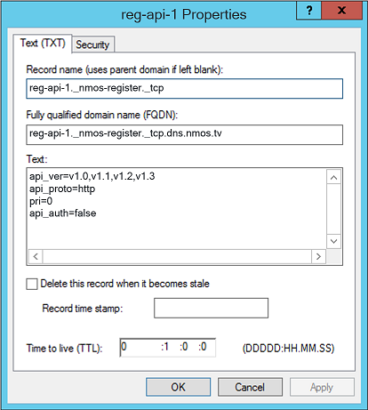

Examples for other DNS Servers
The examples below were previously on the NMOS Wiki, and show an equivalent configuration for BIND9, Dnsmasq, Windows DNS and TinyDNS.
Note that the domains, IP addresses, etc. below differ to the examples in the main example HOWTO.
Linux BIND9
The following lines should be included in a zone file. Note that '@' refers to the domain which the zone file is authoritative for (in this case dns.nmos.tv). SOA records and similar are omitted in this example.
; These lines indicate to clients that this server supports DNS Service Discovery
b._dns-sd._udp IN PTR @
lb._dns-sd._udp IN PTR @
; These lines indicate to clients which service types this server may advertise
_services._dns-sd._udp PTR _nmos-register._tcp
_services._dns-sd._udp PTR _nmos-registration._tcp
_services._dns-sd._udp PTR _nmos-query._tcp
; These lines give the fully qualified DNS names to the IP addresses of the hosts which we'd like to discover
; This example uses a domain of 'dns.nmos.tv'. We recommend using a subdomain of a domain name which you own.
registration1.dns.nmos.tv. IN A 192.168.200.5
query1.dns.nmos.tv. IN A 192.168.200.6
; There should be one PTR record for each instance of the service you wish to advertise.
; Here we have one Registration API (_nmos-registration._tcp) and one Query API (_nmos-query._tcp)
; From v1.3, the Registration API switches to use a new name (_nmos-register._tcp)
_nmos-register._tcp PTR reg-api-1._nmos-register._tcp
_nmos-registration._tcp PTR reg-api-1._nmos-registration._tcp
_nmos-query._tcp PTR qry-api-1._nmos-query._tcp
; Next we have a SRV and a TXT record corresponding to each PTR above, first the Registration API
; The SRV links the PTR name to a resolvable DNS name (see the A records above) and identify the port which the API runs on
; The TXT records indicate additional metadata relevant to the IS-04 spec
reg-api-1._nmos-register._tcp SRV 0 0 80 registration1.dns.nmos.tv.
reg-api-1._nmos-register._tcp TXT "api_ver=v1.0,v1.1,v1.2,v1.3" "api_proto=http" "pri=0" "api_auth=false"
reg-api-1._nmos-registration._tcp SRV 0 0 80 registration1.dns.nmos.tv.
reg-api-1._nmos-registration._tcp TXT "api_ver=v1.0,v1.1,v1.2,v1.3" "api_proto=http" "pri=0" "api_auth=false"
; Finally, the SRV and TXT for the Query API
qry-api-1._nmos-query._tcp SRV 0 0 80 query1.dns.nmos.tv.
qry-api-1._nmos-query._tcp TXT "api_ver=v1.0,v1.1,v1.2,v1.3" "api_proto=http" "pri=0" "api_auth=false"
Dnsmasq
The following lines should be added to the dnsmasq configuration file, e.g. /etc/dnsmasq.conf.
; These lines indicate to clients that this server supports DNS Service Discovery
; This example uses a domain of 'dns.nmos.tv'. We recommend using a subdomain of a domain name which you own.
ptr-record=b._dns-sd._udp.dns.nmos.tv,dns.nmos.tv ; domain enumeration
ptr-record=lb._dns-sd._udp.dns.nmos.tv,dns.nmos.tv ; legacy browse domain
; There should be one PTR record for each instance of the service you wish to advertise.
; Here we have one Registration API (_nmos-registration._tcp) and one Query API (_nmos-query._tcp)
; From v1.3, the Registration API switches to use a new name (_nmos-register._tcp)
ptr-record=_nmos-register._tcp.dns.nmos.tv,reg-api-1._nmos-register._tcp.dns.nmos.tv
ptr-record=_nmos-registration._tcp.dns.nmos.tv,reg-api-1._nmos-registration._tcp.dns.nmos.tv
ptr-record=_nmos-query._tcp.dns.nmos.tv,qry-api-1._nmos-query._tcp.dns.nmos.tv
; Next we have a SRV and a TXT record corresponding to each PTR above, first the Registration API
; The SRV links the PTR name to a resolvable DNS name (see hosts file below) and identify the port which the API runs on
; (priority and weight are optional and omitted here)
; The TXT records indicate additional metadata relevant to the IS-04 spec
srv-host=reg-api-1._nmos-register._tcp.dns.nmos.tv,registration1.dns.nmos.tv,80
txt-record=reg-api-1._nmos-register._tcp.dns.nmos.tv,"api_ver=v1.0,v1.1,v1.2,v1.3","api_proto=http","pri=0","api_auth=false"
srv-host=reg-api-1._nmos-registration._tcp.dns.nmos.tv,registration1.dns.nmos.tv,80
txt-record=reg-api-1._nmos-registration._tcp.dns.nmos.tv,"api_ver=v1.0,v1.1,v1.2,v1.3","api_proto=http","pri=0","api_auth=false"
; Finally, the SRV and TXT for the Query API
srv-host=qry-api-1._nmos-query._tcp.dns.nmos.tv,query1.dns.nmos.tv,80
txt-record=qry-api-1._nmos-query._tcp.dns.nmos.tv,"api_ver=v1.0,v1.1,v1.2,v1.3","api_proto=http","pri=0","api_auth=false"
The A records may be configured in the dnsmasq additional hosts file (specified by the -H,--addn-hosts=<file> option).
192.168.200.5 registration1.dns.nmos.tv.
192.168.200.6 query1.dns.nmos.tv.
The entries in the hosts file may omit the domain if two further lines are added to the configuration file:
expand-hosts
domain=dns.nmos.tv
TinyDNS
The following is an example 'data' file for TinyDNS. Explanation of each line is provided via the comments.
# SOA and related records.
# This example uses a domain of 'dns.nmos.tv'. We recommend using a subdomain of a domain name which you control. Presumably this record is not necessary if there is a pre-existing nmos.tv SOA.
.dns.nmos.tv:10.24.103.14
# These PTR records indicate to clients that this server supports DNS Service Discovery
^b._dns-sd._udp.dns.nmos.tv:dns.nmos.tv.
^lb._dns-sd._udp.dns.nmos.tv:dns.nmos.tv.
# These PTR records indicate to clients which service types this server may advertise.
# Here we have one Registration API (_nmos-registration._tcp) and one Query API (_nmos-query._tcp)
^_services._dns-sd._udp.dns.nmos.tv:_nmos-register._tcp.dns.nmos.tv.
^_services._dns-sd._udp.dns.nmos.tv:_nmos-registration._tcp.dns.nmos.tv.
^_services._dns-sd._udp.dns.nmos.tv:_nmos-query._tcp.dns.nmos.tv.
# These lines result in A records the fully qualified DNS names to the IP addresses of the hosts which we'd like to discover as well as their corresponding PTR records.
+registration1.dns.nmos.tv:10.24.103.16
+query1.dns.nmos.tv:10.24.103.17
# There should be one PTR record for each instance of the service you wish to advertise.
# Here we have one Registration API (_nmos-registration._tcp) and one Query API (_nmos-query._tcp)
^_nmos-register._tcp.dns.nmos.tv:reg-api-1._nmos-register._tcp.dns.nmos.tv.
^_nmos-registration._tcp.dns.nmos.tv:reg-api-1._nmos-registration._tcp.dns.nmos.tv.
^_nmos-query._tcp.dns.nmos.tv:qry-api-1._nmos-query._tcp.dns.nmos.tv.
# Next we have a SRV and a TXT record corresponding to each PTR above, first the Registration API
# The SRV record (type 33) links the PTR name to a resolvable DNS name (see hosts entries below) and identify the port which the API runs on. It was generated using https://anders.com/projects/sysadmin/djbdnsRecordBuilder/
# (priority and weight are optional and omitted here)
# The TXT records (type 16) indicate additional metadata relevant to the IS-04 spec. We can't use the bulit-in tinydns TXT record type because it does the wrong thing with the multiple TXT entries required by DNS-SD. These TXT records were hand-crafted. The octal escaped values, which represent the length of each text entry, will have to be modified if the api_ver or pri changes.
:reg-api-1._nmos-registration._tcp.dns.nmos.tv:33:\000\000\000\000\014\212\015registration1\003dns\004nmos\002tv\000
:reg-api-1._nmos-registration._tcp.dns.nmos.tv:16:\026api_ver=v1.0,v1.1,v1.2,v1.3\016api_proto=http\005pri=0
# New values for the SRV and TXT records for v1.3 of IS-04. Also arbitrarily change the "pri" for the purposes of demonstration.
:reg-api-1._nmos-register._tcp.dns.nmos.tv:33:\000\000\000\000\014\212\015registration1\003dns\004nmos\002tv\000
:reg-api-1._nmos-register._tcp.dns.nmos.tv:16:\033api_ver=v1.0,v1.1,v1.2,v1.3\016api_proto=http\006pri=10
# Finally, the SRV and TXT for the Query API
:qry-api-1._nmos-query._tcp.dns.nmos.tv:33:\000\000\000\000\014\212\006query1\003dns\004nmos\002tv\000
:qry-api-1._nmos-query._tcp.dns.nmos.tv:16:\026api_ver=v1.0,v1.1,v1.2,v1.3\016api_proto=http\005pri=0
Windows DNS
Using Windows DNS Manager, in addition to the Host (A) records, the appropriate PTR, SRV and TXT records can be created as follows.
For example, at the dns.nmos.tv zone, add the following records for the Registration API. T
- Pointer (PTR)
- Host IP address: _nmos-register._tcp (yes, really; the user interface is confusing here, because DNS-SD isn't the most common use-case for a PTR record)
- Fully qualified domain name (FQDN): (uneditable, but becomes) _nmos-register._tcp.dns.nmos.tv
- Host name: reg-api-1._nmos-register._tcp.dns.nmos.tv
- Service Location (SRV)
- Domain: dns.nmos.tv
- Service: reg-api-1._nmos-register
- Protocol: _tcp
- Port number: 80
- Host offering this service: registration1.dns.nmos.tv
- Text (TXT)
- Record name: reg-api-1._nmos-register._tcp
- Fully qualified domain name (FQDN): reg-api-1._nmos-register._tcp.dns.nmos.tv
- Text (with one record per line and without quotation marks, as follows):
api_ver=v1.0,v1.1,v1.2,v1.3 api_proto=http pri=0 api_auth=false

Repeat with _nmos-registration (assuming support for v1.2 and earlier is required).
Repeat with _nmos-query.
Similarly add _services, b._dns-sd and lb._dns-sd PTR records as seen in other examples.